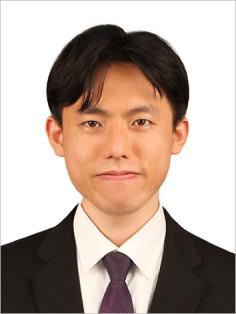

Jinho Byun
Research Professor · Department of Energy Engineering · KENTECH
11, Hyeoksinsandan 1-gil, Naju-si, Jeollanam-do, Korea
jinho@kentech.ac.kr
Bio
Jinho Byun is a Research Professor in the Department of Energy Engineering at KENTECH. He earned his Ph.D. in Physics from Pusan National University, focusing on emergent phenomena in polar oxides and their applications. His research spans ferroelectric and oxide interfaces, in situ electron microscopy, and first‑principles/DFT‑based modeling of functional materials.
Publications
- Y. Xing¶, J. Byun¶, J. Seo, Z. Wang, Y. Jin, S. Kim, J. Lee, S. H. Oh*. Geometry-driven surface electron dichotomy via ordered subsurface defects. Nature Physics (under consideration).
- K. Lee¶, Y. Xing¶, J. Byun¶, M. Jeong¶, J. Seo, J. Lee, J. Bang, E. Lee*, S. H. Oh*. Visualizing Oxygen Vacancy‑Induced Dielectric Dead Layer at Metal‑Oxide Interfaces by In‑situ Multimodal Electron Microscopy. Science Advances (under review).
- J. Byun¶, K. Lee¶, M. Jeong, E. Lee, J. Bang, H. Kim, G.H. Gu*, S.H. Oh*. Imaging 3D polarization dynamics via deep learning 4D‑STEM. arXiv:2506.06598 (2025). link
- Z. Wang¶, J. Byun¶, Z. Wang, Y. Xing, J. Seo, J. Lee, S.H. Oh*. Direct Observation of Atomic Step‑Assisted Stabilization of Polar Surfaces. Advanced Materials 35 (40), 2303051 (2023).
- Z. Wang¶, J. Byun¶, S. Lee, J. Seo, B. Park, J. Kim, H.Y. Jeong, J. Bang, J. Lee, S.H. Oh*. Vacancy driven surface disorder catalyzes anisotropic evaporation of polar ZnO (0001) surface. Nature Communications 13, 5616 (2022).
- Y.-I. Kim¶, M. Jeong¶, J. Byun¶, S.-H. Yang, W. Choi, W.-S. Jang, J. Jang, K. Lee, Y. Kim, J. Lee, E. Lee, Y.-M. Kim. Atomic‑scale identification of invisible cation vacancies at an oxide homointerface. Materials Today Physics 16, 100302 (2021).
- J. Jo¶, J. Byun¶, J. Lee, D. Choe, I. Oh, J. Park, M.-J. Jin, J. Lee*, J.-W. Yoo*. Emergence of Multispinterface and Antiferromagnetic Molecular Exchange Bias via Molecular Stacking on a Ferromagnetic Film. Advanced Functional Materials 30 (11), 1908499 (2020).
- Y. Xing, I. Kim, K. T. Kang, J. Byun, W. S. Choi, J. Lee, S. H. Oh*. Monitoring the formation of infinite‑layer transition metal oxides through in situ atomic‑resolution electron microscopy. Nature Chemistry 17, 66–73 (2025).
- J. Seo, H. Lee, K. Eom, J. Byun, T. Min, J. Lee, K. Lee, C.-B. Eom, S. H. Oh. Field‑induced modulation of two‑dimensional electron gas at LaAlO3/SrTiO3 interface by polar distortion of LaAlO3. Nature Communications 15, 5268 (2024).
- J. Hwang, J. Byun, H. Kim, J. Lee. High‑mobility two‑dimensional electron gas at the PbZr0.5Ti0.5O3/BaSnO3 heterostructure. J. Korean Phys. Soc. 84, 67–72 (2024).
- Y. Ha, J. Byun, J. Lee, J. Son, Y. Kim, S. Lee. Infrared Transparent and Electromagnetic Shielding Correlated Metals via Lattice‑Orbital‑Charge Coupling. Nano Letters 22, 6573–6579 (2022).
- M. Sheen, Y. Ko, D. Kim, J. Kim, J. Byun, K. Y. Yeon, D. Kim, J. Jung, J. Choi, R. Kim, J. Yoo, I. Kim, C. Joo, N. Hong, J. Lee, S. H. Jeon, S. H. Oh, J. Lee, N. Ahn, C. Lee*. Highly efficient top‑down processed blue InGaN nanoscale light‑emitting diodes. Nature.
- K. Kang, J. Byun, M. Jeen, G. Jo, Y.K. Baek, J. Lee, H. Jeen. Effect of sintering time on electronic properties of strontium hexaferrite. Ceramics International (2022).
- K. Lee, J. Byun, K. Park, S. Kang, M.-S. Song, J. Park, J. Lee, S. Chae*. Giant Tunneling Electroresistance in Epitaxial Ferroelectric Ultrathin Films Directly Integrated on Si. Applied Materials Today 26, 101308 (2022).
- J. Lee, M. S. Song, W.-S. Jang, J. Byun, H. Lee, M. H. Park, J. Lee, Y.-M. Kim*, S. C. Chae*, T. Choi*. Modulating the ferroelectricity of hafnium zirconium oxide ultrathin films via interface engineering to control the oxygen vacancy distribution. Advanced Materials Interfaces 9 (7), 2101647 (2021).
- Y. Ha, J. Byun, J. Lee, S. Lee. Design Principles for the Enhanced Transparency Range of Correlated Transparent Conductors. Laser & Photonics Reviews 15 (5), 2000444 (2021).
- J. Jo¶, J. Byun, I. Oh, J. Park, M.-J. Jin, B.-C. Min, J. Lee*, J.-W. Yoo*. Molecular tunability of magnetic exchange bias and asymmetrical magnetotransport in metalloporphyrin/Co hybrid bilayers. ACS Nano 13 (1), 894–903 (2018).
- S.-J. Kwon, B.-M. Jung, T. Kim, J. Byun, J. Lee, S.-B. Lee, U.-H. Choi*. Influence of Al2O3 Nanowires on Ion Transport in Nanocomposite Solid Polymer Electrolytes. Macromolecules 51 (24), 10194–10201 (2018).
- T.T. Ly, G. Duvjir, T. Min, J. Byun, T. Kim, M.M. Saad, N.T.M. Hai, S. Cho, J. Lee*, J. Kim*. Atomistic study of the alloying behavior of crystalline SnSe1−xSx. Physical Chemistry Chemical Physics 19 (32), 21648–21654 (2017).